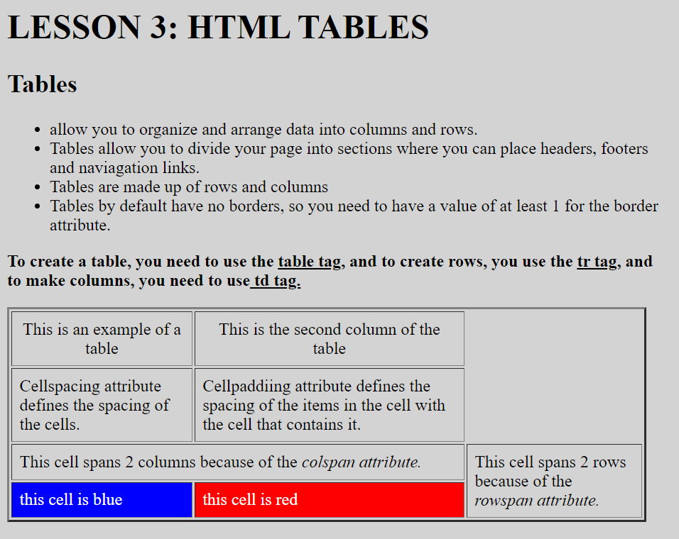

LESSON 1: XHTML
Input

Output
LESSON 2: LISTS
Input
Output
LESSON 3: TABLES
Input
Output
LESSON 4: HYPERLINKS
Input
Output

LESSON 5: FORMS
Input
Output
|
Hello there! My name is Nestor L Pastor III, but, you can call me Thirdy. |
My Hobbies Are:
|
These are some pictures associating me:
| MY SECTION (FAMILY) | MY BAND (SINGKWENTA) |
|---|---|
| This picture was taken during the meeting of each group in the AP / ESP activity where each group is tasked to create a civil government to help other people. | |
| This picture was taken after each section rejoiced when the announcement of suspension of classes was released from the NGO. We were all very happy to have half the day off. | |
| This video was taken as a trophy of relief after a long quarter of renting courts practicing during breaks because the volleyball games of MAPEH were over and our group (THE ONES IN THE PINK SHIRTS) won 2 - 0. |
|
I believe that I will reflect on my behavior because of the result of my actions and outputs in ICT. My periodical score is not high so my goals for next quarter are to change that. ICT is one of the subjects that will inspire me to become a more productive person together with my friends so we can evade the risks of getting the bad grades again. This quarter for ICT has been moderate. it could've been easier if I had paid more attention and had enough knowledge and logic to answer the questions. I can improve myself not for others but also for myself too. |
PASTOR, NESTOR L. III 9 - FAMILY |